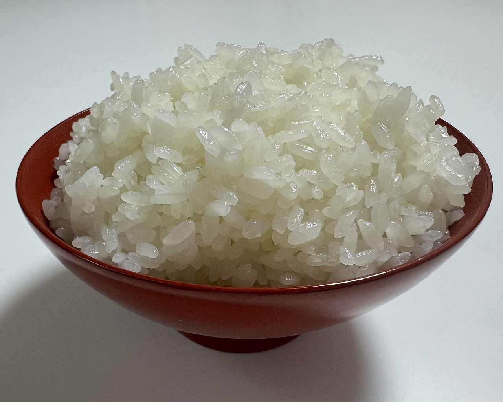
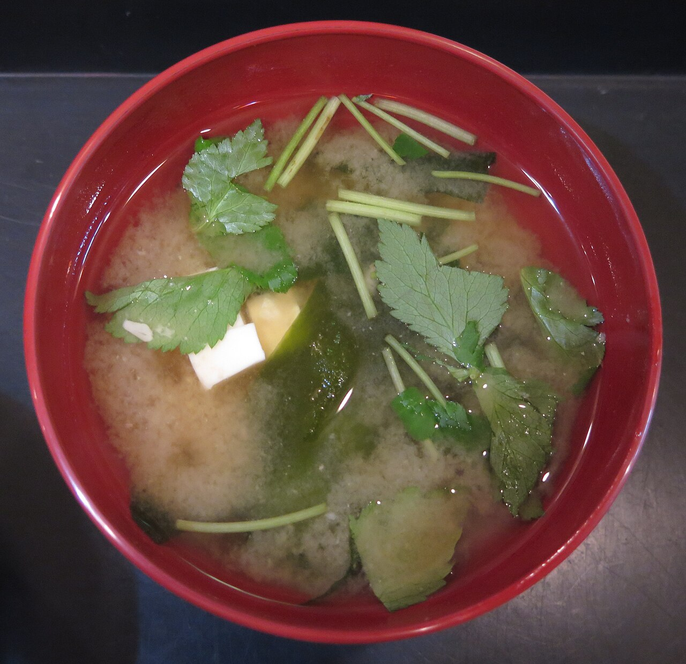
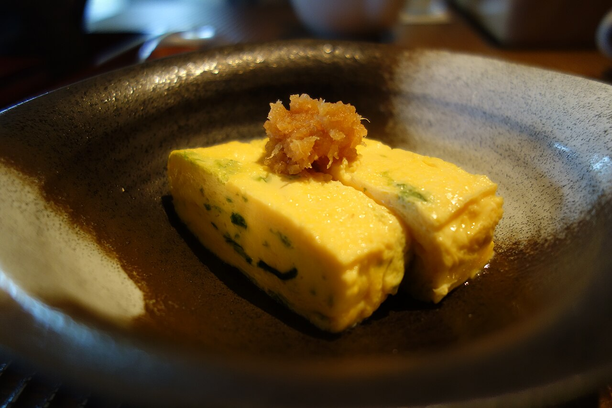

北海道北見市北進町のごはん屋
ごはん家さん COCORU
湯気のたつごはんで、ほっとひと息。そんな時間を思い描いて、このサンプルを作りました。
キャッチコピーは制作側の案です。お店の公式な言葉ではありません。




ごはんのまわりにある、小さな安心
ごはん、汁もの、ちょっとしたおかず。毎日の食卓にあるような、ほっとする光景を写真のイメージで並べています。
実際のメニューやこだわりは、お店からお聞きしたうえで掲載する予定です。いまは「準備中(お問い合わせください)」としています。
この紹介文は制作側の案です。
お店の情報
- 所在地
- 北海道北見市北進町3丁目14-24
- cocoru.2025
- 営業時間
- 準備中(お問い合わせください)
- 定休日
- 準備中(お問い合わせください)
- 駐車場
- 準備中(お問い合わせください)
お店の最新の様子は、Instagramでご覧いただけます。
Instagramを見る掲載写真はフリー素材のイメージで、店舗の実際の様子・料理ではありません。他の地域で撮影されたもの、撮影地が不明なものを含みます。